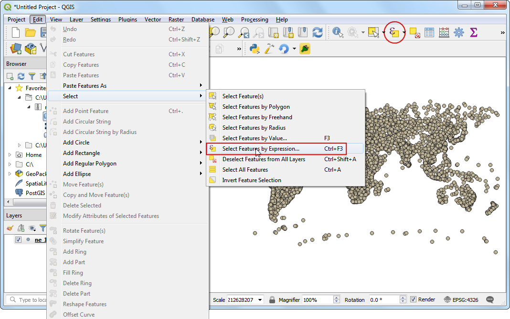
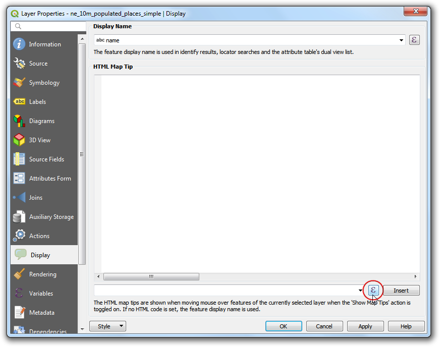
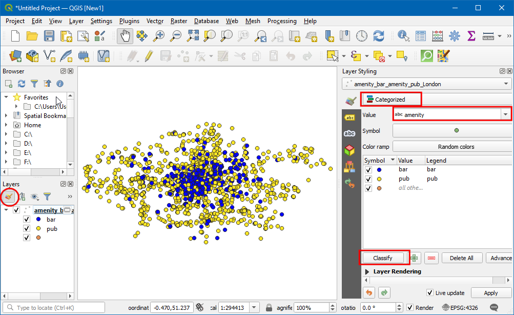
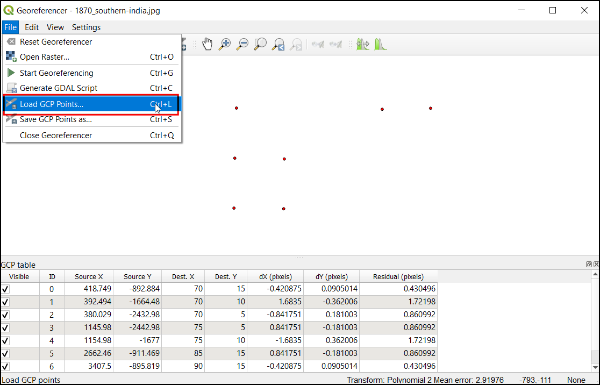
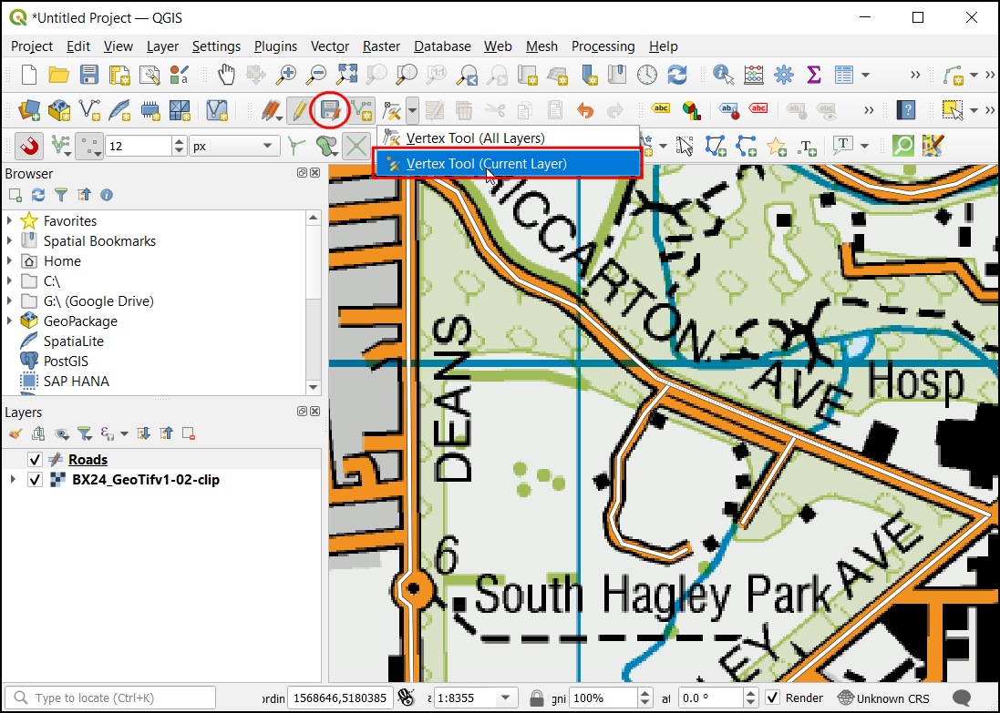
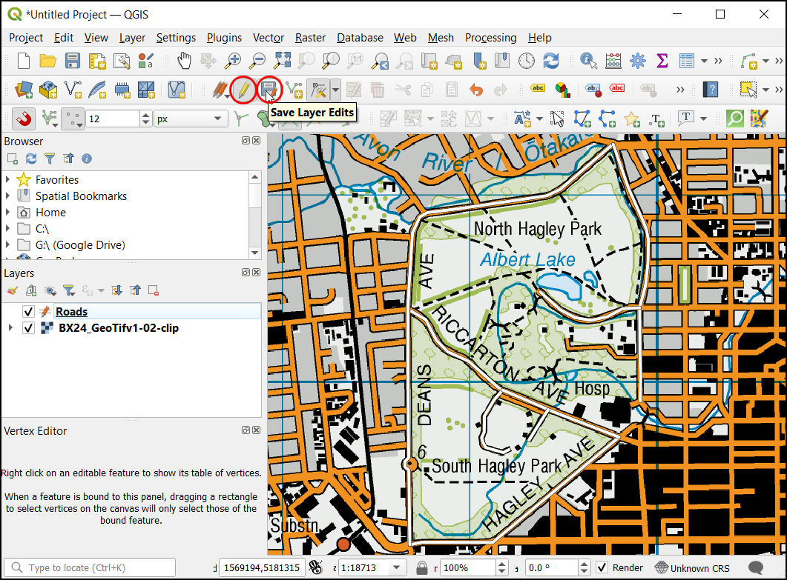
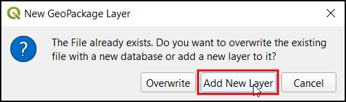
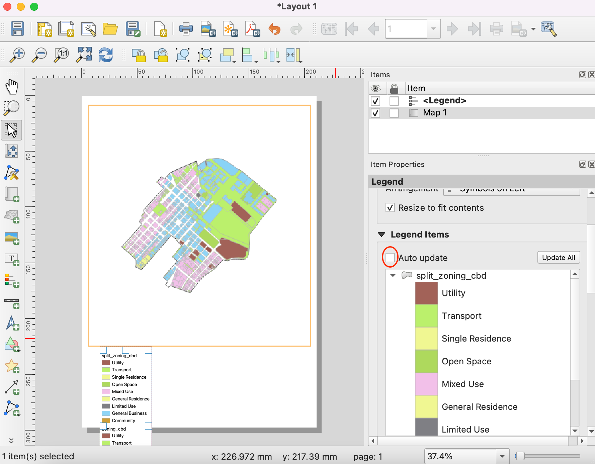
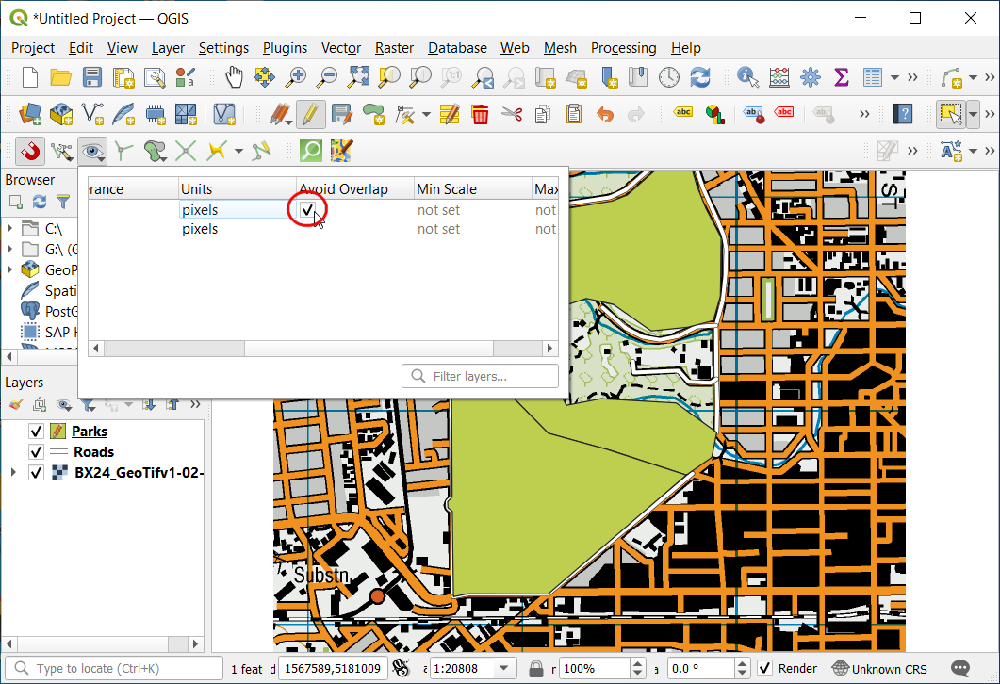

Multi Criteria Overlay Analysis (QGIS3)¶
Multi-criteria weighted-overlay analysis is the process of the allocating areas on the basis of a variety of attributes that the selected areas should possess. Although this is a common GIS operation, it is best performed in the raster space using a grid-based approach.
Σημείωση
Vector vs Raster Overlays
You can do the overlay analysis on vector layers using geoprocessing tools such as buffer, dissolve, difference and intersection. This method is ideal if you wanted to find a binary suitable/non-suitable answer and you are working with a handful of layers.
Working in the raster space gives you a ranking of the suitability - not just the best suited site. It also allows you to combine any number of input layers easily and assign different weights to each criteria. In general, this is the preferred approach for site suitability.
This tutorial goes through the typical workflow for performing a site-suitability analysis - converting source vector data to appropriate rasters, re-classify them and perform mathematical operations.
Overview of the task¶
In this tutorial, we will identify the suitable areas for development, that are
Close to roads, and
Away from water bodies, and
Not in a protected region.
Get the data¶
We will use vector data layers from OpenStreetMap (OSM). OSM is a global database of freely available base map data. Geofabrik provides daily updated shapefiles of OpenStreetMap datasets.
We will be using the OSM data layers for the state of Assam in India. Geofabrik India shapefiles were downloaded, clipped to the state boundary and packaged in a single GeoPackage file. You can download a copy of the geopackage from the link below:
Data Source: [GEOFABRIK]
Procedure¶
Browse to the downloaded
assam.gpkgfile in QGIS Browser. Expand it and drag each of the 5 individual data layers to the map canvas. You will seeboundary,roads,protected_regions,water_polygonsandwater_polylineslayers loaded in the Layers panel.

First step in the overlay analysis, is to convert each data layer to raster. An important consideration is that all rasters must be of the same extent. We will use the
boundarylayer as the extent for all the rasters. Go to . Search for and locate the algorithm. Double-click to launch it.

In the Rasterize (vector to raster) dialog, select
roadsas the Input layer. We want to create an output raster where pixel values are 1 where there is a road and 0 where there are no roads. Enter1as the A fixed value to burn. The input layers are in a projected CRS with meters are the unit. SelectGeoferenced unitsas the Output raster size units. We will set the resolution of the output raster to be 15 meters. Select15as both Width/Horizontal resolution and Height/Vertical resolution. Next, click the … button next to Output extent and selectboundaryfor Use extent for.

Scroll down further and click the arrow button in the Assign a specific nodata value to output bands.

That field should now be set to
Not set. This is important because when raster calculator (which we will use later) encounters a pixel with nodata value in any layer, it sets the output to nodata as well, resulting is wrong output.

Scroll down to find the Advanced Parameters and select the profile
High Compressionto apply the compression. This will generate the compressed raster file of smaller size after running the tool. Applying lossless compression is highly recommended while working with raster data.

Set the Rasterized output raster as
raster_roads.tifand click Run.

Once the processing finishes, you will see a new layer raster_roads loaded in the Layers panel. The default styling will show pixels with roads as white and others as black. We want to convert other 4 vector layers to rasters as well. Rather than running the rasterize algorithm one-by-one, we can use the built-in batch-processing functionality to convert them all at once. See Batch Processing using Processing Framework (QGIS3) tutorial to learn more about batch processing. Right-click the
Rasterize (vector to raster)algorithm and select Execute as Batch Process.

In the Batch Processing dialog, click the … button in the first row of the Input layer column. Select
boundary,protected_regions,water_polygonsandwater_polylineslayers and click OK.

Σημείωση
This Advanced Parameters option is not available while executing the algorithm in batch mode. You will have to repeat the steps above for all the layer and skip steps 8 to 12 for applying compression on all the Rasterized outputs.
Fill in the parameters with the same values we used in the roads layer. After filling the first-row of the parameter, use the button to add the same value for all layers.

In the last column Rasterized, click the … button in the first row. Select
Fill with parameter valuesas the Autofill mode andInput layeras the Parameter to use. Click OK.

Browse to a directory on your computer and name the layer as
raster_. The batch processing interface will autocomplete the name with the layer name and fill in all rows. Make sure the Load layers on completion box is checked and click OK.

Once the processing finishes, you will have 4 new raster layers loaded in the Layers panel. You will notice that we have 2 water related layers - both representing water. We can merge them to have a single layer representing water areas in the region. Search for and locate algorithm in the Processing Toolbox. Double-click to launch it.

Enter the following expression in the Expression box. You can click on the appropriate layer in the Layers box to auto insert the layer names. This expression means that we want to sum the pixel values in the first band of both the water rasters. Click the … button next to Reference layer(s) and select ``raster_water_polygons` as the reference layer. Name the output
raster_water_merged.tifand click Run.
"raster_water_polygons@1" + "raster_water_polylines@1"
The resulting merged raster will have pixels with value 1 for all areas with water. But you will notice that there are some regions where there was both a water polygon and a water polyline. Those areas will have pixels with value 2 - which is not correct. We can fix it with a simple expression. Open algorithm again.

Enter the following expression which will assign the value 1 that match the expression and 0 where it doesn’t. Click the … button next to Reference layer(s) and select ``raster_water_merged` layer. Name the output
raster_water.tifand click Run.
"raster_water_merged@1" > 0
The resulting layer
raster_waternow has pixels with only 0 and 1 values.

Now that we have layers representing road and water pixels, we can generate proximity rasters. These are also known as Euclidean distances - where each pixel in the output raster represents the distance to the nearest pixel in the input raster. This resulting raster can be then used to determine suitable areas which are within certain distance from the input. Search for and locate the algorithm. Double-click to launch it.

In the Proximity (Raster Distance) dialog, select
raster_roadsas the Input layer. ChooseGeoreferenced coordinatesas the Distance units. As the input layers are in a projected CRS with meters as the units, enter5000(5 kilometers) as the Maximum distance to be generated. Make sure the Nodata value to use for the destination proximity raster value isNot set.

You can expand the Advanced Parameters and select the profile
High Compressionto apply the compression. Name the output file asroads_proximity.tifand click Run.

Σημείωση
It may take upto 15 minutes for this process to run. It is a computationaly intensive algorithm that needs to compute distance for each pixel of the input raster and our input contains over 1 billion pixels.
Once the processing is over, a new layer
roads_proximitywill be added to the Layers panel. To visualize it better, let’s change the default styling. Click the Open the Layer Styling panel button in the Layers panel. Change the Max value to5000under Color gradient.

Repeat the Proximity (Raster Distance) algorithm for the
raster_waterlayer with same parameters and name the outputwater_proximity.tif.

Once the processing finishes, you can apply the similar styling as before to visualize the results better. If you click around the resulting raster, you will see that it is a continuum of values from 0 to 5000. To use this raster in overlay analysis ,we must first re-classify it to create discrete values. Open algorithm again.

We want to give higher score to pixels that are near to roads. So let’s use the following scheme.
0-1000m –> 100
1000-5000m –> 50
>5000m –> 10
Enter the following expression that applies the above criteria on the input. Click the … button next to Reference layer(s) and select ``roads_proximity` layer. Name the output
roads_reclass.tifand click Run.100*("roads_proximity@1"<=1000) + 50*("roads_proximity@1">1000)*("roads_proximity@1"<=5000) + 10*("roads_proximity@1">5000)
Once the re-classification process finishes, a new layer
roads_reclasswill be added to the Layers panel. This layer has only 3 different values, 10, 50 and 100 indicating relative suitability of the pixels with regards to distance from roads. Open algorithm again.

Repeat the re-classification process for the
water_proximitylayer. Here the scheme will be reverse, where pixels that are further away from water shall have higher score.
0-1000m –> 10
1000 -5000m —> 50
>5000m –> 100
Enter the following expression that applies the above criteria on the input. Click the … button next to Reference layer(s) and select ``water_proximity` layer. Name the output
water_reclass.tifand click Run.100*("water_proximity@1">5000) + 50*("water_proximity@1">1000)*("water_proximity@1"<=5000) + 10*("water_proximity@1"<1000)
Now we are ready to do the final overlay analysis. Recall that our criteria for determining suitability is as follows - close to roads, away from water and not in a protected region. Open . Enter the following expression that applies these criteria. Note that we are multiplying the result with
raster_boundary@1at the end to discard pixel values outside of the state boundary. Click the … button next to Reference layer(s) and selectraster_boundarylayer. Name the outputoverlay.tifand click Run.
("roads_reclass@1" + "water_reclass@1")*("raster_protected_regions@1" != 1 )*"raster_boundary@1"
Σημείωση
In this example, we are giving equal weight to both road and water proximity. In real-life scenario, you may have multiple criteria with different importance. You can simulate that by multiplying the rasters with appropriate weights in the above expression. For example, if proximity to roads is twice as importance as proximity away from water, you can multiply the roads_reclass raster with 2 in the expression above.
Once the processing finishes, the resulting raster
overlaywill be added to the Layers panel. The pixel values in this raster range from 0 to 200 - where 0 is the least suitable and 200 is the most suitable area for development. Click the Open the Layer Styling panel button in the Layers panel.

Select
singleband_pseudocolorrenderer and theSpectralcolor ramp. Click Classify to apply the color ramp to the raster.

Click on the default label values next to each color and enter appropriate labels. The labels will also appear as the legend under the
overlaylayer.

Raster layers are rectangular grids. We want to hide pixels outside the state boundary. An easy way to achieve this is applying an
Inverted Polygonsrendered to the vector boundary layer. Scroll down in the Layers panel and locate theboundarylayer. SelectInverted Polygonsas the renderer and leave other options to default.

For the effect of the renderer to show, it needs to be at the top of the Table of Contents. Right-click the
boundarylayer and select Move to Top.

Check the layer and the map canvas would update to show the
overlayraster clipped to theboundarylayer. This is the final output that shows areas within the state that are suitable for development.